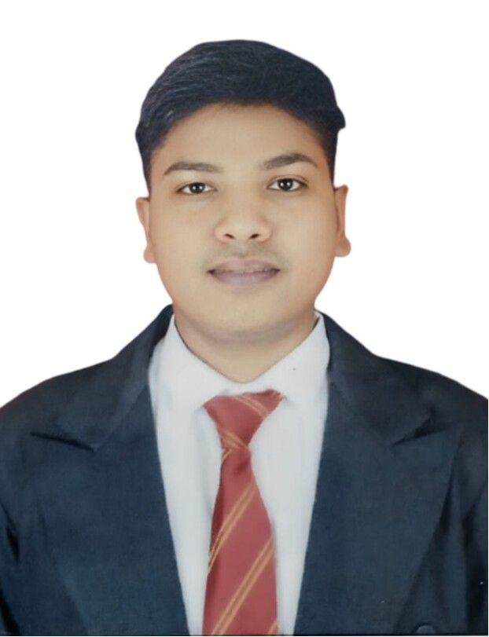

Aspiring Full Stack Java Developer
I am an aspiring Java Developer with a strong foundation in Core Java and SQL. Currently, I am exploring Spring Boot and Angular as part of my full-stack development journey. I am passionate about enhancing my coding skills through hands-on projects and certifications like "Programming in Java" by NPTEL. My goal is to grow continuously as a developer and contribute meaningfully to impactful projects.
Received this award for consistent academic excellence in both the first and second year of graduation. It reflects my dedication to studies, attention to detail, and time management skills.
Secured 1st place in the Card Tower competition at an intercollegiate fest, outperforming participants from several colleges. Demonstrated strategic thinking, creativity, and teamwork under pressure.
Awarded 2nd rank in an intra-college quiz competition organized by the CS/IT department for all students. It sharpened my critical thinking and quick decision-making under pressure.
Volunteered as an NSS member during my First Year, participating in social service activities such as cleanliness drives, tree plantation, and awareness campaigns. Successfully attended and contributed to a 7-day NSS residential camp, gaining practical experience in community service, rural development, and team coordination.
Volunteered as a Student Coordinator in organizing college events and academic activities. Assisted in event management, student coordination, and administrative tasks to ensure the smooth execution of various programs.